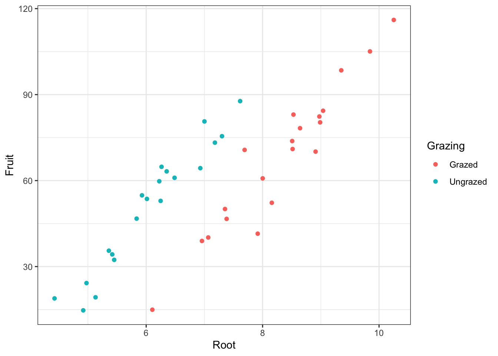

4 Visualizing your data
4.1 The first step in every data analysis - making a picture
install.packages("ggplot2", repos = "https://cran.us.r-project.org")
install.packages("dplyr", repos = "https://cran.us.r-project.org")Read in the data
urlfile04a="https://raw.githubusercontent.com/apicellap/data/main/compensation.csv"
compensation<-read.csv(url(urlfile04a))View dataframe & read the variables + the first few of their observations horizontally:
glimpse(compensation) ## Rows: 40
## Columns: 3
## $ Root <dbl> 6.225, 6.487, 4.919, 5.130, 5.417, 5.359, 7.614, 6.352, 4.975,…
## $ Fruit <dbl> 59.77, 60.98, 14.73, 19.28, 34.25, 35.53, 87.73, 63.21, 24.25,…
## $ Grazing <chr> "Ungrazed", "Ungrazed", "Ungrazed", "Ungrazed", "Ungrazed", "U…4.2 ggplot2: a grammar for graphics
Create base plot:
base_plot <-ggplot(compensation, aes(x = Root, y = Fruit,
colour=Grazing)) + #colour: for the two levels of the categorical variable, Grazing
geom_point()
base_plotRender background white instead of gray:
base_plot + theme_bw()
base_plot +
theme_bw() +
geom_point(
size = 5) #alter size of datapoints in scatterplot Add x and y axis titles:
base_plot + theme_bw() + geom_point(size = 5) +
xlab("Root Biomass") +
ylab("Fruit Production") 4.3 Box and whisker plots
base_plot2 <- ggplot(compensation, aes(x = Grazing, y = Fruit)) +
geom_boxplot() +
geom_point(
size = 4, #size of point
colour = 'lightgrey', #color of point
alpha = 0.5) + #transparency of point
xlab("Grazing treatment") +
ylab("Fruit Production") +
theme_bw()
base_plot24.4 Distributions: making histograms of numeric variables
ggplot(compensation, aes(x=Fruit))+
geom_histogram(bins=15) #bins defines how many histogram bins there are
ggplot(compensation, aes(x=Fruit))+
geom_histogram(bins=15) +
facet_wrap(~Grazing) #facet_wrap() allows you to put the plots next to each other, a variable must be specified